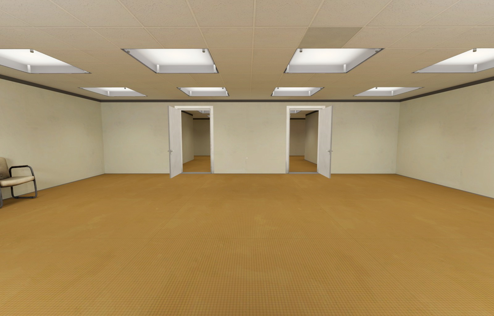
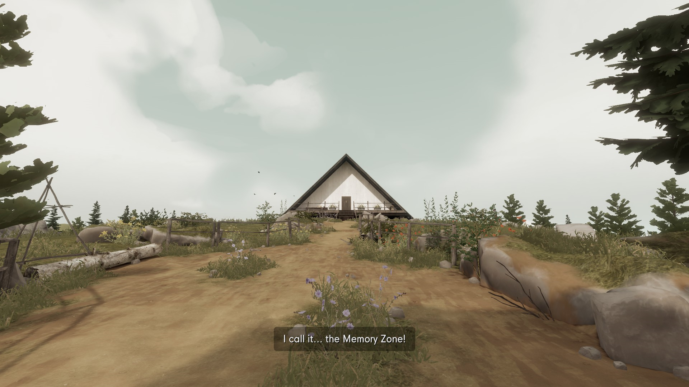
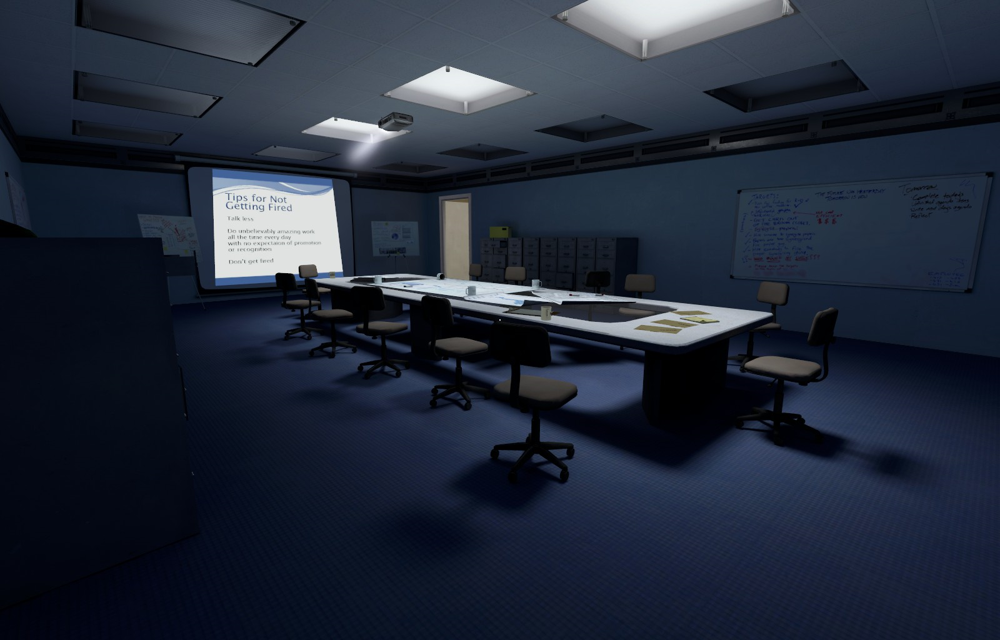
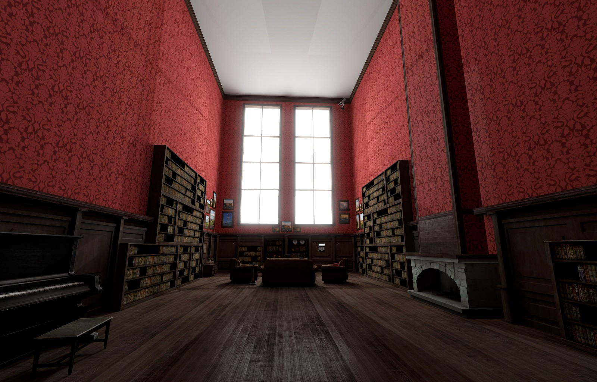

The Stanley Parable, ein First-Person-Abenteuerspiel, ist für Spieler ab 14 Jahren geeignet und bietet eine einzigartige Spielerfahrung. Erhältlich auf Linux, MacOS, Windows, Nintendo Switch, PS4/PS5 und Xbox. Das Original wurde am 17. Oktober 2013 veröffentlicht, während die Ultra Deluxe-Version am 27. April 2022 erschien. Entwickelt und veröffentlicht von Crows Crows Crows (früher Galactic Cafe), bietet das Spiel zu einem Preis von 11,99€ (Original) bzw. 21,99€ (Ultra Deluxe) ein kreatives und fesselndes Spielerlebnis.
Das Spiel begann als Modifikation für Half-Life, entwickelte sich jedoch später zu einem eigenständigen Spiel. Die Handlung führt den Spieler durch surreale Bürokomplexe, wobei die zeitliche Einordnung absichtlich unklar bleibt, und die Handlung, durchzogen von überraschenden Wendungen, macht das Spiel einzigartig. Das Ziel ist nicht einfach zu gewinnen, sondern die fesselnde Geschichte zu erleben. Zusätzlich gibt es seit dem 27.04.2022 die Ultra Deluxe-Version, die das Spielerlebnis mit neuen Inhalten weiter vertieft.
In The Stanley Parable geht es darum, dass der einfache Büroangestellte Stanley feststellt, dass seine Kollegen auf mysteriöse Weise verschwunden sind. Als Spieler schlüpft man in die Rolle von Stanley, doch gleichzeitig auch nicht: Deine Entscheidungen werden dir genommen, das Spiel endet und endet doch nie. Widersprüche prägen das Spielerlebnis, die Regeln von Videospielen werden immer wieder gebrochen. Es geht nicht darum zu gewinnen - vielmehr ist The Stanley Parable ein Spiel, das mit dir spielt. :]
"Crows Crows Crows" ist ein unabhängiges Videospielstudio aus London, bekannt für originelles Spieldesign und gegründet von William Pugh, der durch "The Stanley Parable" Anerkennung fand. Das Team, mit vielfältigem Hintergrund, zeichnet sich durch kreative Zusammenarbeit und unkonventionelle Spiele aus. Ihre Werke, wie zum Beispiel "Dr. Langeskov, The Tiger, and The Terribly Cursed Emerald: A Whirlwind Heist", zeugen von Humor und dem Bruch von Spielekonventionen, was dem Studio einen Namen in der Indie-Szene verschafft hat.